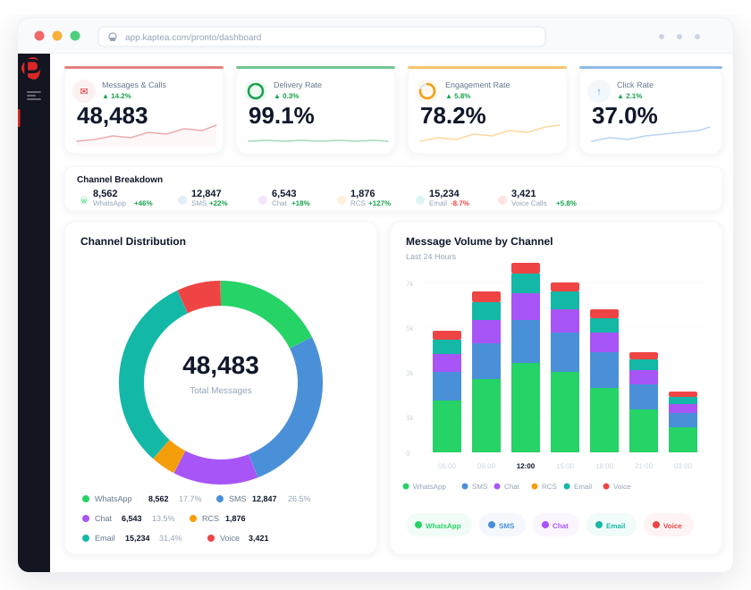

Every channel.
One platform.
Zero dropped messages.
Orchestrate SMS, WhatsApp, Voice, Email, RCS, and social messaging from a single governed interface - with built-in failover, two-way messaging, and full delivery visibility across every conversation.

Enterprises don't have a channel problem. They have an orchestration problem.
Channels managed in silos
SMS through one vendor, WhatsApp via a third party, email from another tool. No unified view, no consistent governance, no cross-channel failover when one path goes down.
Messages disappear without trace
When a critical message fails, nobody knows until a customer complains. Delivery diagnostics are buried across multiple dashboards with no single source of truth.
Every new channel is another project
Connecting channels to your CRM, governance layer, and analytics requires custom engineering. Adding social messaging shouldn't mean starting from scratch.
One orchestration platform across all the channels your customers use.
All channels, one interface
Pronto connects SMS, WhatsApp, Voice, Email, RCS, and social messaging - including Facebook Messenger and Instagram Direct - through a single unified inbox. Agents see the full conversation history across every channel. No switching between tools. No lost context.
- Send bulk campaigns or 1-to-1 conversations across any channel
- Two-way messaging with AI-assisted reply suggestions
- WhatsApp template management with Meta approval workflows
- Click-to-call voice with call recording and queue management
- HTML email campaigns with SendGrid delivery and open/click tracking
- Social messaging via Facebook Messenger and Instagram Direct
Cross-channel failover that never drops a message
When SMS delivery fails, Pronto automatically routes through an alternative channel. Every message gets a delivery confirmation, and every failure gets a diagnostic trail - so you know exactly what happened and why, in real time.
- Automatic failover cascade: SMS to WhatsApp to Email
- Real-time delivery diagnostics per message
- Event streaming to Slack, Kafka, PagerDuty for instant alerts
- Load-aware routing during high-volume surge events
- Campaign failover and retry with configurable rules
Inbound orchestration - route, assign, resolve
When customers reply or call in, Pronto routes the conversation to the right agent based on channel, skill, and availability. Real-time queue updates mean agents always know what's waiting - and customers never feel ignored.
- Inbound routing across SMS, WhatsApp, Voice, social, and webchat
- Real-time agent dashboard with pending conversation queue
- Task assignment with history tracking and resolution logging
- AI-generated contact summaries for instant context
- Suppression list management with opt-out reason tracking
Outbound campaign orchestration built for scale
Design, schedule, and send multi-channel campaigns through a step-by-step wizard. Pronto batches large sends to maintain deliverability, tracks status in real time, and gives you per-contact delivery visibility across every channel.
- Campaign wizard with channel, audience, and content selection
- Scheduled or immediate delivery with intelligent batch processing
- Link shortening with click tracking for SMS
- A/B testing across email, SMS, WhatsApp, RCS, and social templates
- AI-powered analytics with anomaly detection and benchmarks
- CSAT surveys and customer satisfaction tracking
180+
Countries reached via
Twilio carrier network
10M+
SMS messages delivered
annually for one customer alone
Days
Typical deployment - from
contract to live in a week
All channels
SMS, RCS, WhatsApp, Voice,
Email, Social in one platform
"With Pronto, we manage SMS communication across more than 900 depots from a single platform. Messages that used to require manual coordination now go out automatically, with full delivery visibility."
National trade merchant — 900+ depot network, Retail & Distribution
900+
Depots managed through a single Pronto instance
10M+
SMS messages delivered annually via Pronto for enterprise customers
7 days
Typical time from contract to live deployment
1 inbox
All channels, all conversations, full history in one view
Every channel your customers use. One platform to manage them all.
Each channel has its own dedicated capability set, governance layer, and analytics — click through to explore what's possible.
SMS & RCS
High-volume transactional and promotional messaging with rich branded RCS cards, read receipts, and full carrier compliance.
Explore SMS & RCS →Two-way business messaging on WhatsApp Business Platform — templated notifications, rich media, and chatbot handoffs.
Explore WhatsApp →Voice & IVR
Outbound voice campaigns, intelligent IVR routing, real-time transcription, and call recording on Twilio Programmable Voice.
Explore Voice & IVR →Transactional and marketing email via SendGrid, with AI Copilot design, template governance, and deep CRM integration.
Explore Email →Secure Video
Dialectica — browser-based encrypted video meetings with automatic S3 recording, AI transcription, and no installs required.
Explore Secure Video →Social Messaging
Bidirectional Microsoft Teams and Slack integration — trigger workflows, receive alerts, and govern all traffic from Pronto.
Explore Social Messaging →Omni-channel communications, answered
See it working across your channels
Book a 30-minute demo tailored to your channels, your volumes, and your compliance requirements.
Book a Demo